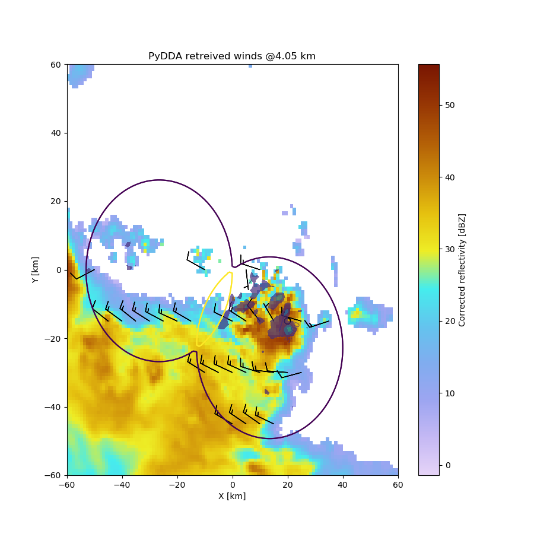
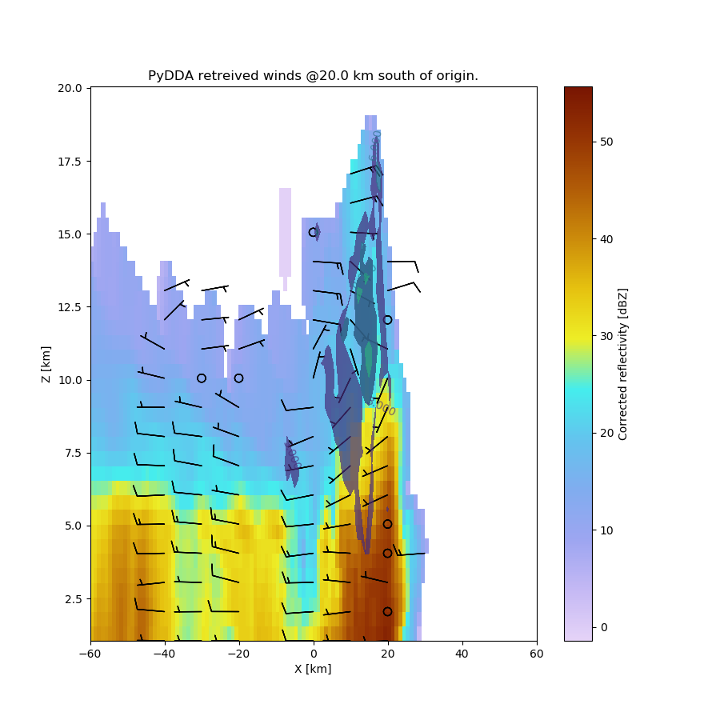
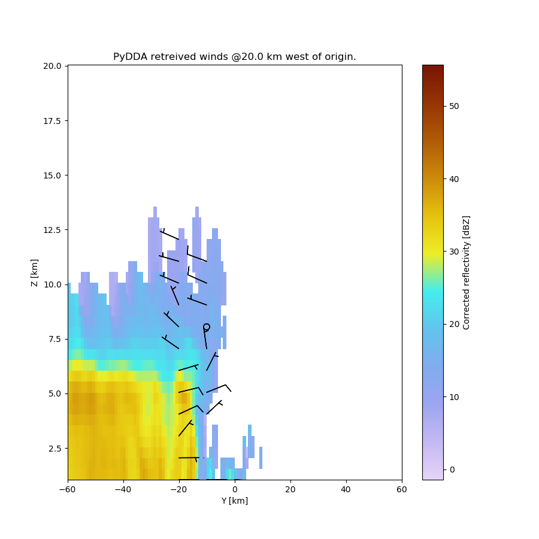

Note
Click here to download the full example code
Example on retrieving and plotting winds on a distributed cluster¶
This is a simple example for how to retrieve winds using the nested grid features of PyDDA.
Author: Robert C. Jackson
- 
- 
- 
Out:
/home/travis/miniconda3/envs/testenv/lib/python3.6/site-packages/pyart/io/cfradial.py:365: UserWarning: WARNING: valid_min not used since it
cannot be safely cast to variable data type
data = self.ncvar[:]
/home/travis/miniconda3/envs/testenv/lib/python3.6/site-packages/pyart/io/cfradial.py:365: UserWarning: WARNING: valid_max not used since it
cannot be safely cast to variable data type
data = self.ncvar[:]
LocalCluster('tcp://127.0.0.1:35877', workers=2, threads=2, memory=8.36 GB)
<Client: 'tcp://127.0.0.1:35877' processes=2 threads=2, memory=8.36 GB>
/home/travis/build/openradar/PyDDA/pydda/retrieval/angles.py:24: RuntimeWarning: invalid value encountered in arccos
elev = np.arccos((Re**2 + slantrsq - rh**2)/(2 * Re * slantr))
Calculating weights for radars 0 and 1
/home/travis/build/openradar/PyDDA/pydda/retrieval/wind_retrieve.py:653: RuntimeWarning: invalid value encountered in arccos
theta_2 = np.arccos((x-rad2[1])/b)
Calculating weights for models...
Starting solver
rmsVR = 6.763780749907824
Total points: 23059
| Jvel | Jmass | Jsmooth | Jbg | Jvort | Jmodel | Jpoint | Max w
| 7.3871| 31.7975| 0.0000| 0.0000| 0.0000| 0.0000| 0.0000| 11.4149
Norm of gradient: 0.06526775193484
Iterations before filter: 10
| Jvel | Jmass | Jsmooth | Jbg | Jvort | Jmodel | Jpoint | Max w
| 0.7160| 14.2379| 0.0000| 0.0000| 0.0000| 0.0000| 0.0000| 25.1676
Norm of gradient: 0.02265697102208204
Iterations before filter: 20
| Jvel | Jmass | Jsmooth | Jbg | Jvort | Jmodel | Jpoint | Max w
| 0.5321| 9.8464| 0.0000| 0.0000| 0.0000| 0.0000| 0.0000| 47.6630
Norm of gradient: 0.01957500764369168
Iterations before filter: 30
| Jvel | Jmass | Jsmooth | Jbg | Jvort | Jmodel | Jpoint | Max w
| 0.1613| 7.4489| 0.0000| 0.0000| 0.0000| 0.0000| 0.0000| 54.7406
Norm of gradient: 0.024242000587389026
Iterations before filter: 40
| Jvel | Jmass | Jsmooth | Jbg | Jvort | Jmodel | Jpoint | Max w
| 0.0950| 6.6185| 0.0000| 0.0000| 0.0000| 0.0000| 0.0000| 55.4003
Norm of gradient: 0.0068521874744692755
Iterations before filter: 50
| Jvel | Jmass | Jsmooth | Jbg | Jvort | Jmodel | Jpoint | Max w
| 0.0558| 5.5634| 0.0000| 0.0000| 0.0000| 0.0000| 0.0000| 48.4983
Norm of gradient: 0.007062959266493413
Iterations before filter: 60
| Jvel | Jmass | Jsmooth | Jbg | Jvort | Jmodel | Jpoint | Max w
| 0.0635| 5.1454| 0.0000| 0.0000| 0.0000| 0.0000| 0.0000| 47.1799
Norm of gradient: 0.007419253810169175
Iterations before filter: 70
| Jvel | Jmass | Jsmooth | Jbg | Jvort | Jmodel | Jpoint | Max w
| 0.0746| 4.7402| 0.0000| 0.0000| 0.0000| 0.0000| 0.0000| 41.4696
Norm of gradient: 0.012534260883067003
Iterations before filter: 80
| Jvel | Jmass | Jsmooth | Jbg | Jvort | Jmodel | Jpoint | Max w
| 0.0964| 4.4821| 0.0000| 0.0000| 0.0000| 0.0000| 0.0000| 38.0721
Norm of gradient: 0.007350687268544406
Iterations before filter: 90
| Jvel | Jmass | Jsmooth | Jbg | Jvort | Jmodel | Jpoint | Max w
| 0.0248| 4.2486| 0.0000| 0.0000| 0.0000| 0.0000| 0.0000| 35.5254
Norm of gradient: 0.006395235357479983
Iterations before filter: 100
| Jvel | Jmass | Jsmooth | Jbg | Jvort | Jmodel | Jpoint | Max w
| 0.0282| 4.2278| 0.0000| 0.0000| 0.0000| 0.0000| 0.0000| 35.1108
Norm of gradient: 0.006356258090219102
Iterations before filter: 110
| Jvel | Jmass | Jsmooth | Jbg | Jvort | Jmodel | Jpoint | Max w
| 0.0161| 4.2244| 0.0000| 0.0000| 0.0000| 0.0000| 0.0000| 35.0654
Norm of gradient: 0.006053843826810857
Iterations before filter: 120
| Jvel | Jmass | Jsmooth | Jbg | Jvort | Jmodel | Jpoint | Max w
| 0.0183| 4.1849| 0.0000| 0.0000| 0.0000| 0.0000| 0.0000| 34.8640
Norm of gradient: 0.00951823577051165
Iterations before filter: 130
| Jvel | Jmass | Jsmooth | Jbg | Jvort | Jmodel | Jpoint | Max w
| 0.0147| 4.1860| 0.0000| 0.0000| 0.0000| 0.0000| 0.0000| 34.8698
Norm of gradient: 0.0030066675235468085
Iterations before filter: 140
Applying low pass filter to wind field...
| Jvel | Jmass | Jsmooth | Jbg | Jvort | Jmodel | Jpoint | Max w
|3746.2717| 2.8694| 0.0000| 0.0000| 0.0000| 0.0000| 0.0000| 13.8208
Norm of gradient: 0.9986207335310648
| Jvel | Jmass | Jsmooth | Jbg | Jvort | Jmodel | Jpoint | Max w
|3379.0721| 2.9561| 0.0000| 0.0000| 0.0000| 0.0000| 0.0000| 13.8215
Norm of gradient: 0.9548025630244079
| Jvel | Jmass | Jsmooth | Jbg | Jvort | Jmodel | Jpoint | Max w
| 221.0709| 23.0887| 0.0000| 0.0000| 0.0000| 0.0000| 0.0000| 13.8429
Norm of gradient: 0.23796137320248373
| Jvel | Jmass | Jsmooth | Jbg | Jvort | Jmodel | Jpoint | Max w
| 114.2906| 24.1507| 0.0000| 0.0000| 0.0000| 0.0000| 0.0000| 13.8556
Norm of gradient: 0.15064214158931472
| Jvel | Jmass | Jsmooth | Jbg | Jvort | Jmodel | Jpoint | Max w
| 21.2628| 23.0321| 0.0000| 0.0000| 0.0000| 0.0000| 0.0000| 13.9031
Norm of gradient: 0.06479715576763959
| Jvel | Jmass | Jsmooth | Jbg | Jvort | Jmodel | Jpoint | Max w
| 24.7412| 19.7842| 0.0000| 0.0000| 0.0000| 0.0000| 0.0000| 13.9457
Norm of gradient: 0.14020815313072585
| Jvel | Jmass | Jsmooth | Jbg | Jvort | Jmodel | Jpoint | Max w
| 10.5937| 21.2457| 0.0000| 0.0000| 0.0000| 0.0000| 0.0000| 13.9243
Norm of gradient: 0.0454760529987847
| Jvel | Jmass | Jsmooth | Jbg | Jvort | Jmodel | Jpoint | Max w
| 6.0061| 19.7417| 0.0000| 0.0000| 0.0000| 0.0000| 0.0000| 13.9400
Norm of gradient: 0.03184569414439643
| Jvel | Jmass | Jsmooth | Jbg | Jvort | Jmodel | Jpoint | Max w
| 1.9111| 16.4722| 0.0000| 0.0000| 0.0000| 0.0000| 0.0000| 13.9928
Norm of gradient: 0.017344753103091463
| Jvel | Jmass | Jsmooth | Jbg | Jvort | Jmodel | Jpoint | Max w
| 1.3407| 14.3866| 0.0000| 0.0000| 0.0000| 0.0000| 0.0000| 14.0486
Norm of gradient: 0.02717483431658997
| Jvel | Jmass | Jsmooth | Jbg | Jvort | Jmodel | Jpoint | Max w
| 1.4333| 12.4176| 0.0000| 0.0000| 0.0000| 0.0000| 0.0000| 14.1294
Norm of gradient: 0.015722001451362006
| Jvel | Jmass | Jsmooth | Jbg | Jvort | Jmodel | Jpoint | Max w
| 0.8801| 11.7838| 0.0000| 0.0000| 0.0000| 0.0000| 0.0000| 14.1634
Norm of gradient: 0.010953422655369631
Iterations after filter: 1
Iterations after filter: 2
Done! Time = 172.0
Waiting for nested grid to be retrieved...
/home/travis/build/openradar/PyDDA/pydda/vis/barb_plot.py:175: UserWarning: linewidths is ignored by contourf
alpha=contour_alpha)
/home/travis/build/openradar/PyDDA/pydda/retrieval/wind_retrieve.py:653: RuntimeWarning: invalid value encountered in arccos
theta_2 = np.arccos((x-rad2[1])/b)
/home/travis/build/openradar/PyDDA/pydda/vis/barb_plot.py:214: UserWarning: The following kwargs were not used by contour: 'color'
levels=[bca_min, bca_max], color='k')
/home/travis/build/openradar/PyDDA/pydda/retrieval/wind_retrieve.py:653: RuntimeWarning: invalid value encountered in arccos
theta_2 = np.arccos((x-rad2[1])/b)
/home/travis/build/openradar/PyDDA/pydda/vis/barb_plot.py:214: UserWarning: The following kwargs were not used by contour: 'color'
levels=[bca_min, bca_max], color='k')
/home/travis/build/openradar/PyDDA/pydda/vis/barb_plot.py:637: UserWarning: linewidths is ignored by contourf
alpha=contour_alpha)
/home/travis/build/openradar/PyDDA/pydda/vis/barb_plot.py:825: UserWarning: linewidths is ignored by contourf
alpha=contour_alpha)
import pyart
import pydda
from matplotlib import pyplot as plt
from distributed import LocalCluster, Client
# Needed so that distributed doesn't run all of your code when the worker
# starts!
if __name__ == '__main__':
berr_grid = pyart.io.read_grid(pydda.tests.EXAMPLE_RADAR0)
cpol_grid = pyart.io.read_grid(pydda.tests.EXAMPLE_RADAR1)
sounding = pyart.io.read_arm_sonde(pydda.tests.SOUNDING_PATH)
# Load sounding data and insert as an intialization
u_init, v_init, w_init = pydda.initialization.make_wind_field_from_profile(
cpol_grid, sounding[1], vel_field='corrected_velocity')
# Start our dask distributed cluster. You can use any distributed cluster
# for this...a LocalCluster is used here for the sake of being able to run
# this example locally.
cluster = LocalCluster(n_workers=2)
print(cluster)
client = Client(cluster)
print(client)
# Start the wind retrieval. This example only uses the mass continuity
# and data weighting constraints.
Grids = pydda.retrieval.get_dd_wind_field_nested(
[berr_grid, cpol_grid], u_init, v_init, w_init, client, Co=1.0,
Cm=1500.0, Cz=0, frz=5000.0,
filt_iterations=2, mask_outside_opt=True, upper_bc=1)
# Plot a horizontal cross section
plt.figure(figsize=(9, 9))
pydda.vis.plot_horiz_xsection_barbs(Grids, background_field='reflectivity',
level=6,
w_vel_contours=[3, 6, 9, 12, 15],
barb_spacing_x_km=5.0,
barb_spacing_y_km=15.0)
plt.show()
# Plot a vertical X-Z cross section
plt.figure(figsize=(9, 9))
pydda.vis.plot_xz_xsection_barbs(Grids, background_field='reflectivity',
level=40,
w_vel_contours=[3, 6, 9, 12, 15],
barb_spacing_x_km=10.0,
barb_spacing_z_km=2.0)
plt.show()
# Plot a vertical Y-Z cross section
plt.figure(figsize=(9, 9))
pydda.vis.plot_yz_xsection_barbs(Grids, background_field='reflectivity',
level=40,
w_vel_contours=[3, 6, 9, 12, 15],
barb_spacing_y_km=10.0,
barb_spacing_z_km=2.0)
plt.show()
Total running time of the script: ( 6 minutes 41.963 seconds)